Este documento tiene una licencia Reconocimiento - No Comercial - Compartir Igual - 4.0 de Creative Commons. Se permite su reproducción, distribución y comunicación pública siempre que se cite su autor y no se haga un uso comercial. La creación de obras derivadas también está permitida siempre que se difundan con la misma licencia.
Autores
Rubén Alcaraz Martínez
Afra Pascual Almenara
Mireia Ribera Turró
Primera edición en castellano: Barcelona, enero de 2023. Primera edición web: Barcelona, septiembre de 2026.
Esta guía es una introducción a la creación de gráficos estadísticos accesibles con la versión de escritorio de Microsoft Excel 2019.
Los programas de hojas de cálculo permiten el análisis y almacenamiento de datos tabulares, así como la generación de gráficos estadísticos a partir de los mismos. Mientras que las tablas interactúan con nuestro sistema verbal, los gráficos lo hacen con nuestro sistema visual, mucho más rápido a la hora de procesar información [1]. Un gráfico bien diseñado permite expresar la información de manera más eficiente que una tabla de datos. Sin embargo, para llegar a todas las audiencias, debemos garantizar su accesibilidad.
En el caso de Microsoft Excel, desde su aparición en 1985, este programa ha ido añadiendo nuevas funcionalidades y opciones relacionadas directa o indirectamente con la accesibilidad para asegurar la creación de hojas de cálculo usables para personas con discapacidad.
El objetivo de esta guía es reunir todas estas funcionalidades y opciones en un documento que muestra, paso a paso la creación de gráficos accesibles a partir de datos tabulares.
Si bien se centra en pautas y recomendaciones generales aplicables a cualquier tipo de gráfico, los ejemplos que encontrarás se basan en los gráficos de uso más común: barras, barras apiladas, histogramas, líneas, circulares, de anillos, radiales, de dispersión, y de cajas y bigotes. Aunque el objetivo de esta guía no es el de instruir al lector sobre cuál es el mejor tipo de gráfico para cada situación, sí se ofrece una breve descripción de las situaciones comunicativas en las que acostumbran a usarse. La guía también contempla la creación de tablas de datos accesibles, necesarias no sólo por ser la fuente de los datos a partir de la que se generan los gráficos, sino también como alternativa accesible para determinados perfiles de usuarios.
La guía se estructura en los siguientes apartados:
Para describir los pasos de esta guía se ha utilizado la versión del programa Microsoft Excel 2019 MSO 16.0.10356.20006 para sistemas operativos Windows 11 de 64 bits.
Los pasos a seguir que se muestran en esta guía se basan en el uso del ratón por parte de los creadores de contenido. Sin embargo, Microsoft Excel también permite el uso exclusivo del teclado. En este sentido, cuando en la guía se hace referencia a "hacer clic derecho" o "pulsar la opción ...", puedes utilizar las siguientes alternativas:
Clic derecho: para hacer clic derecho con el teclado, deben pulsarse conjuntamente las teclas Mayúsculas y F10.
Para acceder a las opciones del menú del programa o a las de la cinta de atajos, deben pulsarse la tecla Alt o F10 y, a continuación, la tecla de atajo que se corresponda con la opción que quieras seleccionar. Por ejemplo, para insertar un gráfico, debes pulsar la siguiente combinación de teclas: Alt > B2.
Estos atajos podrían cambiar según el idioma o la versión de tu programa.
Los metadatos de un fichero permiten identificarlo y facilitar su posterior recuperación dentro del equipo informático o en entornos automatizados, a partir de una serie de propiedades con las que lo podemos describir. Además de los metadatos básicos que Excel añade por defecto a los nuevos ficheros en el momento de creación (fecha de creación, o nombre del usuario, entre otros), se recomienda añadir información sobre el título, la autoría o las palabras clave.
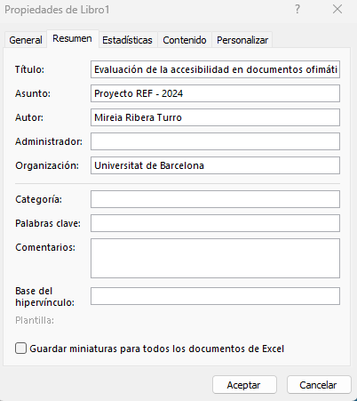
Imagen 1. Menú de información del documento y formulario para añadir metadatos.
Menú: Archivo – Información - Propiedades - Propiedades avanzadas
Permite definir metadatos adicionales (título, asunto, autor, categoría, palabras clave, comentarios, etc.) y modificarlos. Para ver todas las propiedades disponibles hay que pulsar sobre la opción "Personalizar".
Indicar el idioma de los documentos es importante para que las ayudas técnicas (por ejemplo, los lectores de pantalla) sean capaces de representar con mayor fidelidad el contenido. Desgraciadamente y, a diferencia de otros productos como Microsoft Word, Excel no permite indicar el idioma de cada una de las celdas de una hoja de cálculo. Sin embargo, sí podemos indicar el idioma general del documento.
En Archivo - Opciones - Idiomas, bajo la opción "Corrección e idiomas de creación de Office" elige el idioma del documento y activa el botón "Establecer como preferido". Si el idioma no está disponible, puedes añadirlo mediante el botón "Agregar un idioma...".
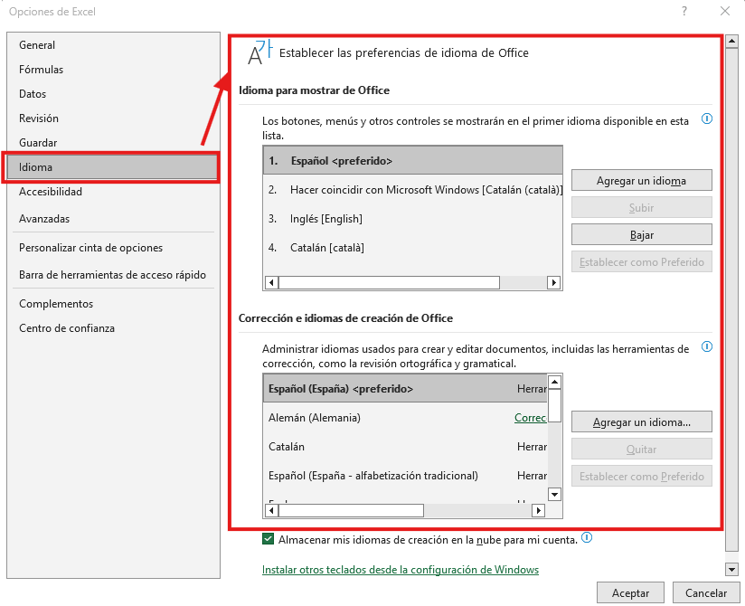
Imagen 2. Cuadro de diálogo para establecer el idioma de creación y corrección del Office.
Además del idioma, la configuración regional de la aplicación también puede implicar importantes diferencias en cuanto a la sintaxis de las fórmulas y en la forma de expresar decimales o fechas. La configuración regional no se puede modificar desde Excel, sino que debe hacerse desde las opciones de configuración del sistema operativo.
Si importamos datos de otras fuentes es importante prestar atención a este detalle para su correcta interpretación.
Configuración - Hora e idioma - Idioma y región
Por defecto, la configuración utilizada es la propia del idioma del sistema operativo. Si modificamos el idioma, la configuración (fechas, números...) variará en consonancia. Sin embargo, también podemos modificar el formato de cada uno de estos aspectos individualmente. El menú "Región" dentro de "Formato regional", permite elegir un idioma y seleccionar "Formato de número", "Formato de moneda", y "Formato de fecha y hora".
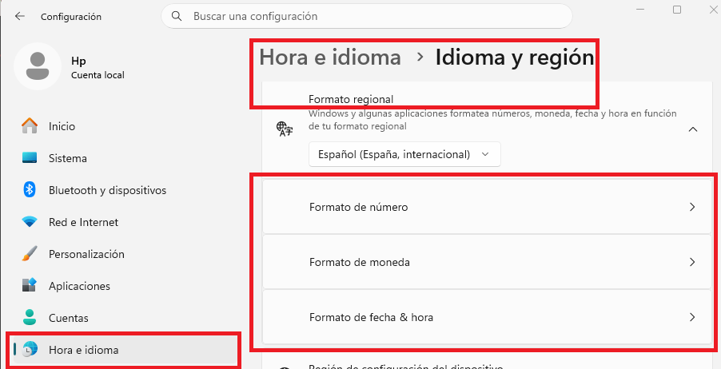
Imagen 3. Elección de idioma y botón de opciones de formato.
Windows permite configurar opciones más avanzadas de numeración, pero no es recomendable cambiarlas.
Cuando trabajamos con una hoja de cálculo la estructura del documento es igual de importante que la de un documento Word o PowerPoint. En este sentido, en la medida de lo posible, debemos:
Ejemplos
Ejemplo incorrecto
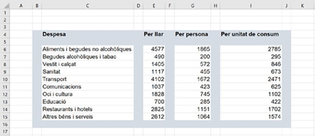
Imagen 4. Ejemplo de mala práctica: En este ejemplo se han usado celdas en blanco para dar formato a la tabla. Por otro lado, el contenido debería comenzar en la primera celda de la hoja (A1) y no en la cuarta fila de la segunda columna (B4).
Ejemplo correcto
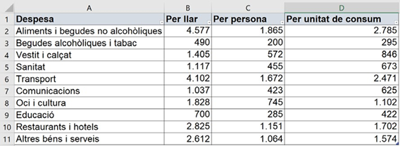
Imagen 5. Ejemplo de buena práctica: En este ejemplo no hay ninguna celda en blanco y el contenido empieza en la primera celda de la hoja.
Cada hoja de cálculo del libro debe titularse con un nombre único suficientemente descriptivo para entender cuál es su contenido.
Sitúa el cursor del ratón encima del título de la hoja y haz doble clic. A continuación, escribe el título de la hoja.
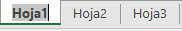
Imagen 6. Al hacer doble clic encima de la pestaña de cada hoja, se activará la opción de edición del título.
Asignar un nombre a un grupo de celdas facilita la navegación y la recuperación de la información dentro del documento.
Selecciona con el ratón o con la tecla "Mayúsculas" y el cursor de dirección el grupo de celdas al que quieras asignar un nombre. A continuación, selecciona:
Menú: Fórmulas – Asignar nombre.
En el cuadro de diálogo que se abre, indica el nombre del grupo de celdas y su ámbito (todo el libro o sólo la hoja de cálculo activa). Finalmente, pulsa el botón "De acuerdo".
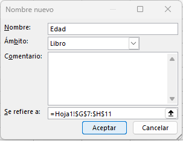
Imagen 7. Cuadro de diálogo para asignar un nombre a un grupo de celdas.
Con la combinación de teclas Ctrl + F3 puedes abrir el "Administrador de nombres" para consultar y navegar por los grupos de celdas creados.
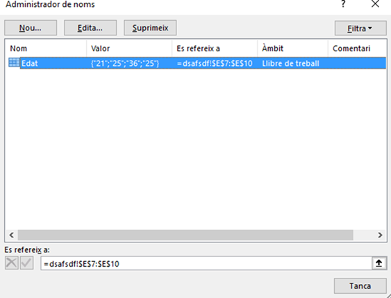
Imagen 8. Cuadro de diálogo del administrador de nombres y lista de grupos de celdas disponibles.
Definir los encabezamientos de las columnas de las tablas es importante para facilitar la comprensión y la navegación por el contenido de la tabla, especialmente para usuarios de lectores de pantalla.
Menú: Insertar - Tabla
Esto abrirá un cuadro de diálogo en el que tendrás que indicar qué celdas forman la tabla. Esta ventana también incluye una casilla de verificación que se debe marcar para indicar que la tabla tiene encabezamientos.
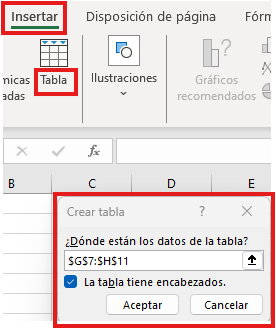
Imagen 9. Pasos para insertar una tabla.
Menú: Insertar – Tabla
Una vez creada la nueva tabla, puedes modificar el título de las columnas.
Si ya tienes los datos introducidos en la hoja de cálculo, pero no has creado aún una tabla siguiendo los pasos anteriores, puedes hacerlo ahora. Excel generará la tabla y marcará su primera fila como encabezado.
Los usuarios ciegos o con baja visión severa pueden experimentar dificultades para moverse por las hojas de cálculo, sobre todo, si contienen muchas tablas, datos y gráficos diferentes. En este sentido, es conveniente proporcionar un resumen del contenido y unas directrices de navegación básicas para que el usuario pueda comprender cuál es el contenido, cómo se organiza dentro del libro y en qué orden se recomienda la consulta.
La manera más efectiva de proporcionar esta información es ubicar este resumen al principio de la primera hoja de cálculo (por ejemplo, en la celda A1), dado que esta parte del documento será la primera que leerán los lectores de pantalla al acceder a la hoja.
Un ejemplo de texto resumen podría ser el siguiente:
Ejemplo correcto
"Este archivo contiene los resultados del ejercicio económico del año 2020. Contiene tres hojas de cálculo con sendas tablas. La primera hoja, ‘ingresos’, corresponde a los ingresos. La segunda hoja, ‘gastos’, corresponde a los gastos. Finalmente una tercera hoja, ‘grafico’, contiene un gráfico de líneas que muestra la evolución de los resultados económicos en los últimos cinco años."
Por defecto, el contenido de las celdas de una hoja de cálculo se identifica como número genérico (General). Si queremos trabajar con otros tipos de valores como decimales, moneda..., texto, porcentajes o fechas, deberemos indicarlo. El formato es muy importante no sólo para garantizar el buen funcionamiento de las fórmulas aplicadas y la compatibilidad del documento, sino también para que las ayudas técnicas puedan interpretar correctamente el contenido.
Una vez seleccionada, haz clic derecho o Mayúsculas + F10.
Selecciona el tipo de datos dentro de las opciones disponibles.
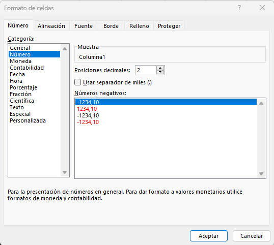
Imagen 10. Tipos de datos disponibles. Algunos tipos de datos como los números permiten seleccionar configuraciones más avanzadas. En el ejemplo, se ve la configuración por defecto con dos decimales
Excel cuenta con un conjunto de estilos predefinidos que puedes aplicar a tus documentos o plantillas. Sin embargo, las combinaciones de fuentes tipográficas y colores por defecto no siempre son del todo accesibles. En este sentido, aunque también podemos asignar diferentes estilos a cada una de las celdas a medida que vamos creando la hoja de cálculo, lo más eficiente es generar los estilos personalizados accesibles para reutilizarlos en diferentes documentos. El uso de estilos aporta consistencia y facilita su comprensión y lectura [2].
Menú: Inicio – Estilos de Celda.
Despliega los estilos disponibles para las tablas o celdas, y selecciona la opción "Nuevo estilo de celda".
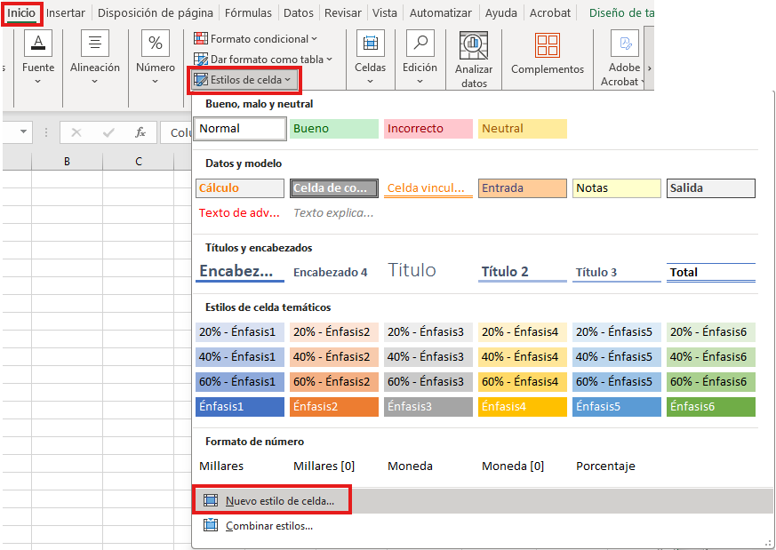
Imagen 11. Estilos disponibles y opción para crear un nuevo estilo de celda.
Activa el botón "Formato..." y, a continuación, configura el estilo a partir de las opciones disponibles en cada pestaña.
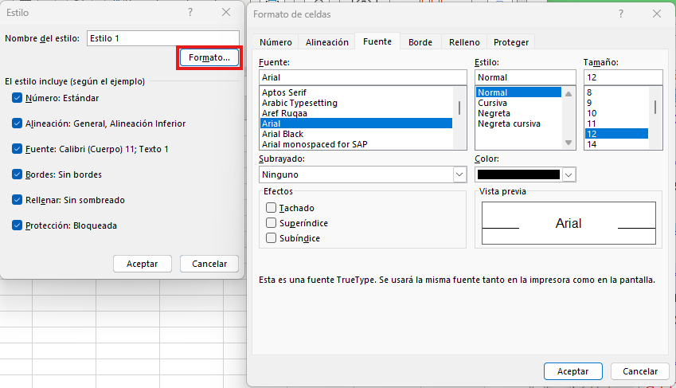
Imagen 12. Opciones para la configuración del formato de las celdas.
La primera pestaña (Número) y la última (Proteger) no están relacionadas con el estilo de la celda, sino con su contenido. En cuanto a las opciones relacionadas con los estilos (Alineación, Fuente, Borde y Relleno), evitaremos:
Las fuentes Verdana y Comic Sans son dos fuentes sans serif que presentan una mayor diferencia entre el número uno, la letra i mayúscula y la letra l minúscula, que la Times New Roman.
A continuación, se incluye una breve caracterización de los gráficos de uso más común, un conjunto de consideraciones generales sobre la accesibilidad de los gráficos y una explicación sobre cómo crear un gráfico a partir de un conjunto de datos.
Los gráficos de barras permiten comparar un conjunto de valores y establecer un ranking entre ellos, si los ordenamos. En este tipo de visualización el lector compara longitudes entre los elementos situados sobre un mismo eje y puede identificar los valores más altos, los más bajos, así como disponer de una aproximación visual de la diferencia entre valores. El gráfico consta de dos ejes: a) uno que muestra la escala de valores representados (cuantitativo); y b) uno que codifica el valor de cada categoría o el tiempo (categórico o temporal), y en el que se sitúan las diferentes barras. El gráfico se puede trasponer, dando lugar a un gráfico de barras vertical u horizontal.
Ejemplos de las buenas prácticas
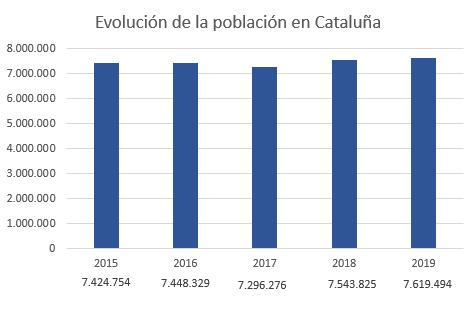
Imagen 13. Gráfico de barras con eje vertical en cero. Fuente: elaboración propia.
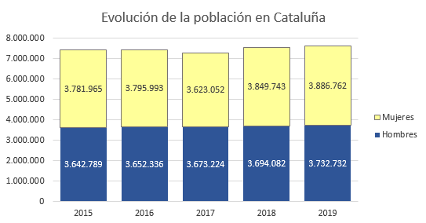
Imagen 14. Gráfico de barras apiladas con suficiente contraste entre las diferentes categorías. Fuente: elaboración propia.
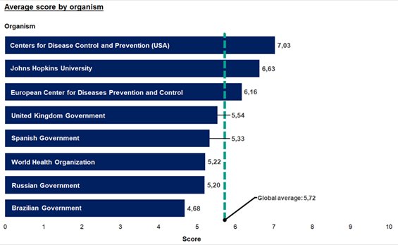
Imagen 15. Gráfico de barras horizontal ordenado y con una línea de referencia para el valor de la media. Fuente: elaboración propia.
Los gráficos de líneas permiten mostrar la evolución temporal de una o más variables cuantitativas. La variable temporal se sitúa en el eje de categorías. El valor en el eje de datos determina la altura de cada categoría. En este caso, no es necesario empezar por cero.
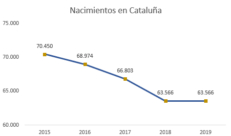
Imagen 16. Gráfico de líneas sin las líneas de cuadrícula. Fuente: elaboración propia
Conocido coloquialmente como gráfico circular, es el gráfico estadístico más controvertido pues el ángulo de los sectores no se percibe con precisión, lo que dificulta su interpretación, especialmente cuando hay muchos sectores o son de tamaño similar [1]. Se utiliza para representar el valor de las partes respecto al total.
Imagen 17. Gráfico de sectores que representa cuatro partes del total. Fuente: elaboración propia.
Los histogramas son gráficos de barras que muestran la distribución de una variable en los que la longitud de cada barra representa la frecuencia de un valor determinado. Los histogramas permiten obtener una visión general de un conjunto de datos e identificar el patrón de los valores (normal, asimétrico, …).
Aunque, por convención, no se acostumbra a dejar espacio entre las barras del gráfico, para garantizar un buen contraste en accesibilidad se recomienda incluir un borde en cada barra.
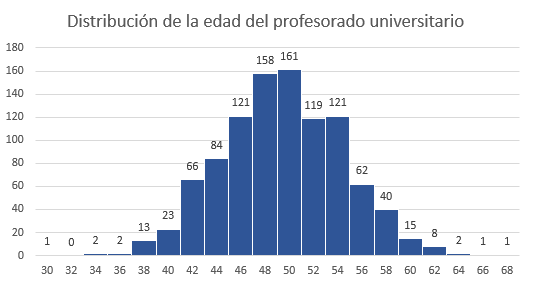
Imagen 18. Histograma en el que las barras tienen un borde. Fuente: elaboración propia.
Los diagramas de cajas y bigotes (en inglés, boxplot) ofrecen de forma compacta los descriptivos estadísticos de un conjunto de datos. El centro de la caja representa la mediana, los extremos el primer y el tercer cuartil. De cada extremo de la caja emergen las líneas llamadas bigotes que representan los valores mínimo y máximo del intervalo de observaciones típicas. Finalmente, fuera de la caja se encuentran los llamados valores atípicos representados por pequeños círculos o asteriscos.
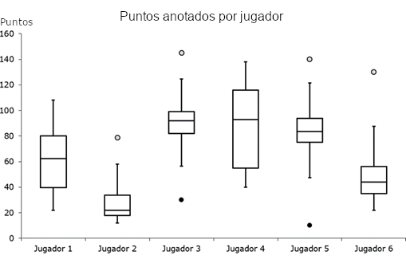
Imagen 19. Diagrama de cajas y bigotes. Fuente: elaboración propia.
Los gráficos de dispersión (en inglés scatterplot) permiten representar el valor de dos variables y ver su relación. También permiten identificar valores atípicos, es decir, que no siguen la misma correlación que el resto.
A menudo varios puntos se superponen parcialmente. Para que ello no impida la interpretación de los datos será necesario usar un color diferenciado para el borde de cada punto, y además añadir un efecto de transparencia en el relleno.
En algunos casos puede ser útil añadir una etiqueta textual para el valor de cada punto, pero a menudo provocará mucho ruido.
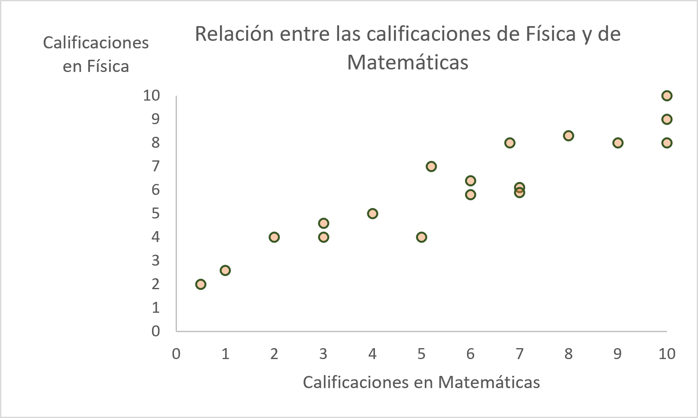
Imagen 20. Gráfico de dispersión que muestra una correlación positiva entre variables. Fuente: elaboración propia.
Selecciona la tabla de datos a partir de la cual quieres generar el gráfico.
Menú: Insertar – Seleccionar el tipo de gráfico.
También puedes seleccionar la opción "Gráficos recomendados" y Excel te ofrecerá los gráficos que teóricamente mejor se adapten para representar visualmente el conjunto de datos seleccionado.
Menú: Insertar – Gráficos recomendados.
Selecciona el gráfico que mejor se adapta a las características del conjunto de datos que quieres representar gráficamente. La pestaña "Todos los gráficos" te permite navegar entre todos los tipos de gráficos disponibles en la biblioteca de Excel.
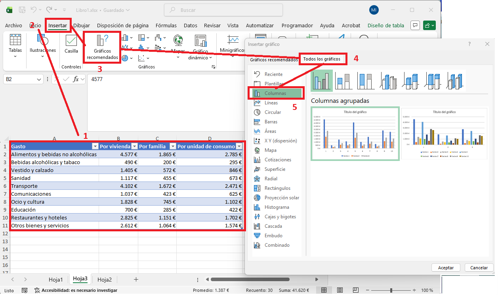
Imagen 21. Pasos para añadir un gráfico estadístico.
Para asegurar la accesibilidad de los gráficos estadísticos generados con Excel tienes que asegurarte que cuentan con:
Las opciones para añadir o editar todos estos elementos a un gráfico se activan en el momento de crear uno, y las podemos encontrar bajo las pestañas "Diseño" y "Formato" de la cinta de atajos. A continuación, se explica, paso a paso, cómo añadir estas características a un gráfico, así como otros aspectos necesarios para garantizar su accesibilidad.
Al añadir un nuevo gráfico a la hoja de cálculo, Excel añadirá automáticamente un título de ejemplo que podemos editar. El título del gráfico debe ser breve (entre 6 y 12 palabras), pero suficientemente descriptivo. En cuanto a su estilo, teniendo presente que la recomendación general es no bajar de los 12 puntos en todo el gráfico, podemos establecer tamaños a partir de esta cifra para los títulos. También podemos utilizar la negrita o un color diferente (siempre con suficiente contraste) si queremos destacarlo por encima del resto de elementos del gráfico.
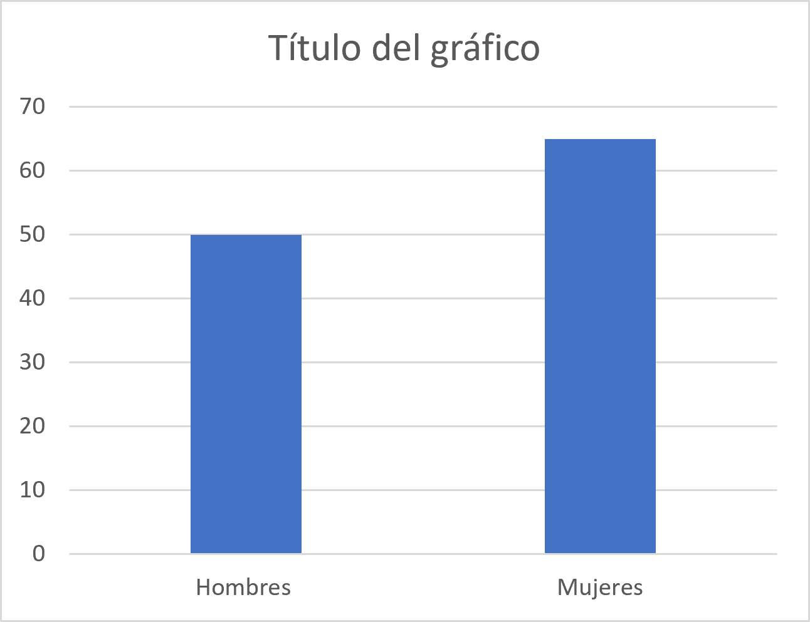
Imagen 22. Título automático que puedes editar y formatear con las opciones de texto de la cinta de opciones.
Para modificar el estilo del gráfico sigue los pasos que se explican a continuación.
Desde este menú podemos modificar el tipo de fuente, tamaño, peso (normal o negrita), estilo (cursiva o subrayado) y color.
Para acceder a las opciones adicionales de formato, haz doble clic sobre el título o selecciónalo y ve a Formato – Opciones de título.
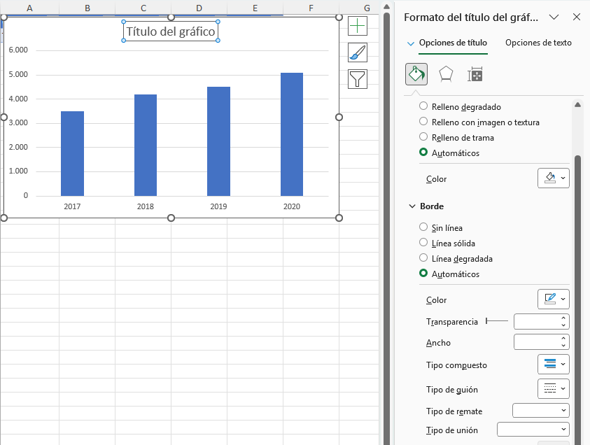
Imagen 23. Opciones de formato para el texto aplicadas al título
Las opciones de formato del título de gráfico permiten modificar el color de relleno (fondo), añadir un borde, sombras, efectos 3D o cambiar la orientación o dirección del texto. Sin embargo y, en pro de la claridad, procura evitar al máximo este tipo de estilos.
El texto alternativo es una explicación breve en palabras del contenido gráfico. El objetivo de un texto alternativo es garantizar que las personas ciegas o con baja visión severa puedan acceder al contenido gráfico mediante un texto que aporte la misma información que el gráfico. Puesto que este texto debe ser breve (no se recomienda más de 125 caracteres), si el gráfico es muy complejo habrá que complementarlo con una descripción larga (véase el punto 1.5.11. Descripción larga).
Seleccionar la opción "Edita el texto alternativo". Una vez activada la ventana para añadir el texto alternativo, escribe el texto en el campo correspondiente. No usaremos nunca la opción "Marcar como decorativo" ya que esta opción está pensada para gráficos que no aportan información y no es apropiada para los gráficos estadísticos.
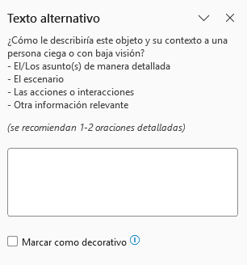
Imagen 24. Cuadro de diálogo para añadir un texto alternativo.
Consejos para redactar un texto alternativo breve:
A continuación, se muestran dos ejemplos de textos alternativos breves para los siguientes gráficos:
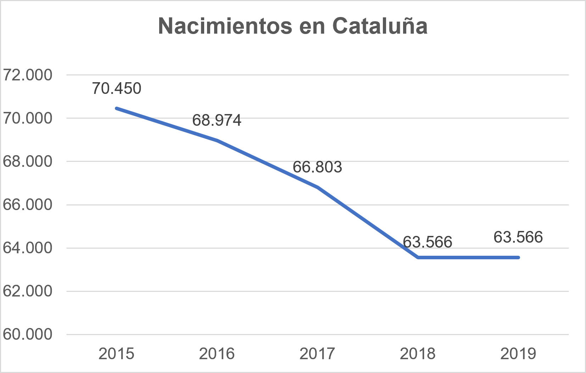
Imagen 25. Segundo gráfico de ejemplo para la demostración del texto alternativo. Fuente: elaboración propia.
Ejemplo correcto
"Gráfico de líneas que muestra la evolución negativa del número de nacimientos en Cataluña en el período 2015-2019."

Imagen 26. Segundo gráfico de ejemplo para la demostración del texto alternativo. Fuente: elaboración propia.
Ejemplo correcto
"Gráfico de sectores que muestra el porcentaje de uso de las diferentes fuentes de información disponibles para encontrar literatura científica."
A diferencia de las versiones anteriores, Excel 365 no incorpora ninguna opción nativa para añadir descripciones largas a los gráficos o imágenes. En el caso de que necesitemos complementar el texto alternativo breve con una descripción larga podemos seguir alguna de las técnicas siguientes:
Selecciona el gráfico en el que quieres añadir el enlace.
Menú: Inserción – Enlace.
Selecciona la hoja en la que se encuentran las descripciones largas (lugar en el documento) y la celda exacta con la descripción larga (referencia de la celda).
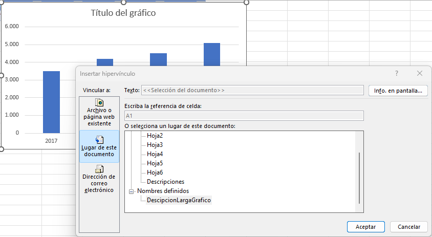
Imagen 27. Excel permite crear enlaces que llevan a lugares concretos del libro de trabajo (celdas concretas dentro de una hoja).Activa el botón "Información de pantalla..." y escribe un texto informativo que aparecerá sobre el gráfico cuando el usuario sitúe el cursor sobre él. Una vez escrito, activa el botón "De acuerdo". Debes tener presente, sin embargo, que este texto no se puede visualizar de forma ampliada y, por lo tanto, a menudo no será legible para personas con baja visión. Finalmente, activa el botón "De acuerdo".
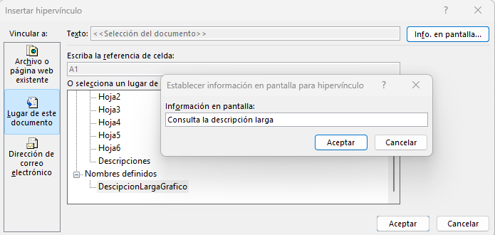
Imagen 28. Puedes añadir información adicional sobre el destino o propósito de los enlaces.
Consejos para redactar una descripción larga:
A continuación, se muestran dos ejemplos de descripciones largas para los siguientes gráficos:
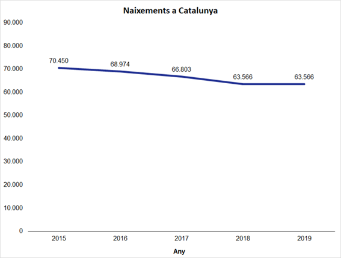
Imagen 29. Primer gráfico para demostrar el uso de la descripción larga.
Ejemplo correcto
"Gráfico de líneas que muestra la evolución negativa del número de nacimientos en Cataluña en el periodo 2015-2019. En el año 2015, nacieron 70.450 personas; en el año 2016, 68.974 personas; en el año 2017, 66.803; en el año 2018, 63.566 personas; y en el año 2019, 63.566 personas."
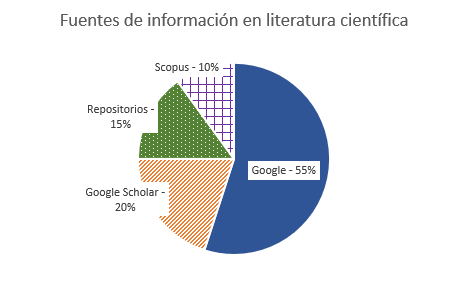
Imagen 30. Segundo gráfico de ejemplo para la demostración del texto alternativo. Fuente: elaboración propia.
Ejemplo correcto
"Gráfico de sectores que muestra el porcentaje de uso de las diferentes fuentes de información disponibles para encontrar literatura científica. La fuente de información más utilizada es Google (55%), seguida del Google Scholar (20%), los repositorios (15%) y Scopus (10%)."
Los ejes son un elemento fundamental en los gráficos cartesianos que permiten relacionar variables independientes (eje x), con variables dependientes (eje y).
Selecciona el gráfico en el que quieres mostrar los ejes.
Menú: Diseño de gráfico – Agregar elemento de gráfico – Ejes.
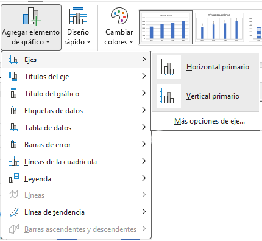
Imagen 31. Opciones del menú de atajos para añadir ejes.
La leyenda de un gráfico incluye las claves para interpretar cómo se han codificado los valores del gráfico. Por ejemplo: hombres, azul; mujeres, blanco.
Selecciona el gráfico en el que quieres añadir la leyenda.
Menú: Diseño de gráfico – Agregar un elemento de gráfico – Leyenda.
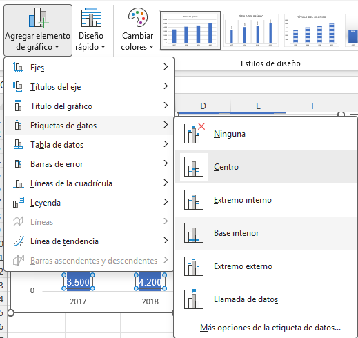
Imagen 32. Acceso a las opciones para añadir una leyenda al gráfico.
Puedes ubicar la leyenda a la izquierda, a la derecha, en la parte superior o en la parte inferior del gráfico.
Siguiendo las recomendaciones de Evergreen [3] una alternativa al uso de las leyendas es etiquetar los datos directamente lo más cerca posible de las marcas. Por ejemplo, encima o al lado de las barras o líneas del gráfico. Al etiquetar directamente los datos, podemos incluso prescindir de los ejes por no incluir información redundante.
En el apartado siguiente se muestra cómo añadir etiquetas de datos.
Las etiquetas de datos permiten mostrar los valores asociados a cada marca (punto, barra...) a su lado, facilitando la lectura de detalles concretos a la audiencia.
Selecciona el gráfico en el que quieres añadir las etiquetas de datos.
Menú: Diseño de gráfico – Agregar – Etiquetas de datos.
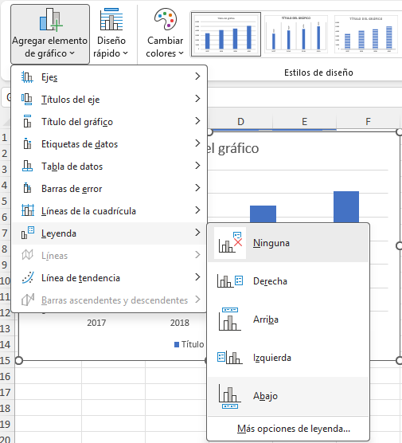
Imagen 33. Acceso a las opciones para añadir etiquetas de valores al gráfico y escoger la posición.
Puedes optar por cualquiera de las opciones. Sin embargo, en el caso de que las situemos en el interior de las barras, sectores, etc., del gráfico, debemos garantizar un contraste suficiente entre el color de los caracteres numéricos y el relleno de la forma.
Mediante la opción "Más opciones de la etiqueta de datos" podemos personalizar las etiquetas con un color de fondo, cambiando la orientación del texto, etc. Sin embargo, sólo recomendamos garantizar un tamaño mínimo de 12 puntos y no decorarlas con características superfluas.
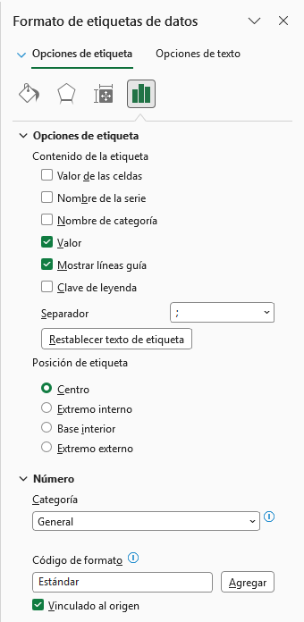
Imagen 34. Opciones avanzadas de formato de las etiquetas de datos.
En el siguiente ejemplo, se muestra el uso de las etiquetas de datos para mostrar los valores asociados a cada punto de un gráfico de líneas.

Imagen 35. Las etiquetas de los datos facilitan a la audiencia conocer los datos exactos que el gráfico representa. Fuente: elaboración propia.
Más allá de las tablas de datos definidas previamente a la creación del gráfico, Excel también permite insertar una tabla con los datos dentro del espacio destinado a un gráfico. Las tablas de datos son una alternativa textual importante para las personas que no pueden ver o tienen serias dificultades para hacerlo.
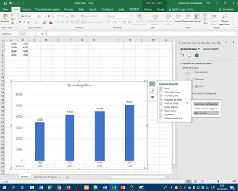
Imagen 36. Opciones avanzadas para la tabla de datos.
Si exportas el gráfico a un programa de edición de textos o de presentación de diapositivas, utiliza las opciones específicas de exportación/importación del gráfico para garantizar que el texto de la tabla sigue siendo texto en este otro documento (véase el apartado 1.8 de esta guía). Si haces una captura de pantalla del gráfico y la insertas en otro documento, el texto dejará de ser accesible ya que lo has transformado en una imagen.
Como en el caso de las celdas, Excel permite definir los estilos de nuestro gráfico a partir de diferentes plantillas preestablecidas. Escoger un estilo u otro implicará el uso de patrones o colores sólidos, una cuadrícula u otra, la incorporación de sombras decorativas, color de fondo, entre otros. En general, los estilos disponibles no son muy adecuados para la accesibilidad y es fácil mejorarlos si los personalizamos.
Menú: Diseño de gráfico – Estilos de diseño.
Selecciona el estilo que quieres utilizar.
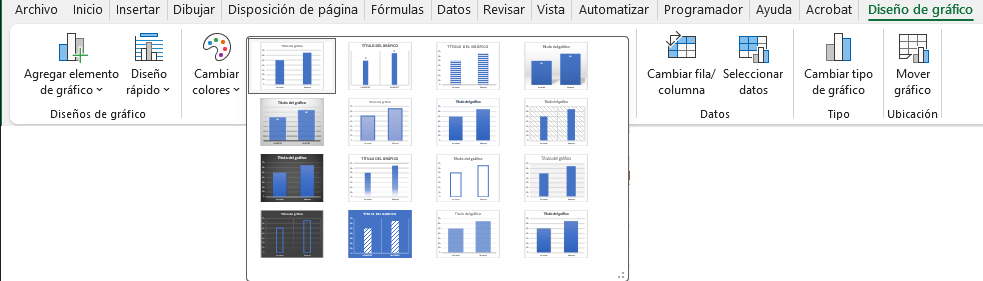
Imagen 37. Estilos predefinidos disponibles.
El color es un sistema de codificación de la información muy eficiente. Sin embargo, no todas las personas presentan la misma capacidad para diferenciar ciertas combinaciones de colores o apreciar el contraste entre dos colores adyacentes. Esto implica que el color nunca debe usarse como el único canal para transmitir información. Aunque podemos encontrar ciertas combinaciones de colores perceptibles por una mayoría de usuarios, debemos ser cuidadosos y emplear alternativas adicionales. Una alternativa al uso del color es el uso de los patrones o texturas para el relleno de las marcas del gráfico.
Selecciona la marca del gráfico que quieres editar (barra, línea...) y haz doble clic.
Selecciona la opción "Llenado y línea" del menú "Formato de las series de los datos" que aparece en la parte derecha de la interfaz, representada por un cubo de pintura ().
Elige la opción "Llenado de imagen o de textura" o "Llenado de patrón".
Selecciona el tipo de textura o patrón preferidos y los colores de primer plano y de fondo.
En este mismo menú, también puedes seleccionar el estilo y color del borde.
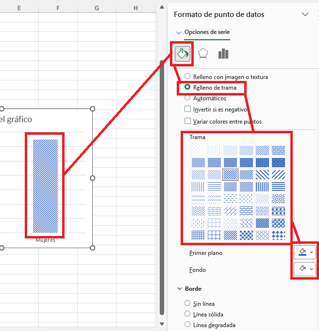
Imagen 38. Opciones de relleno con patrones.
En cuanto al fondo, es un patrón sobre el que se superponen el resto de los componentes presentados, y que no tiene ningún rol esencial en la comunicación de información o datos. En este sentido, procuraremos que el color de fondo elegido mantenga un contraste suficiente con el resto de las marcas (barras, líneas, puntos...). En el siguiente ejemplo, se observa un contraste insuficiente entre el fondo y el color de las barras, así como respecto del texto.
Puedes revisar el contraste mediante herramientas como el Colour Contrast Analyser.
Ejemplo incorrecto.
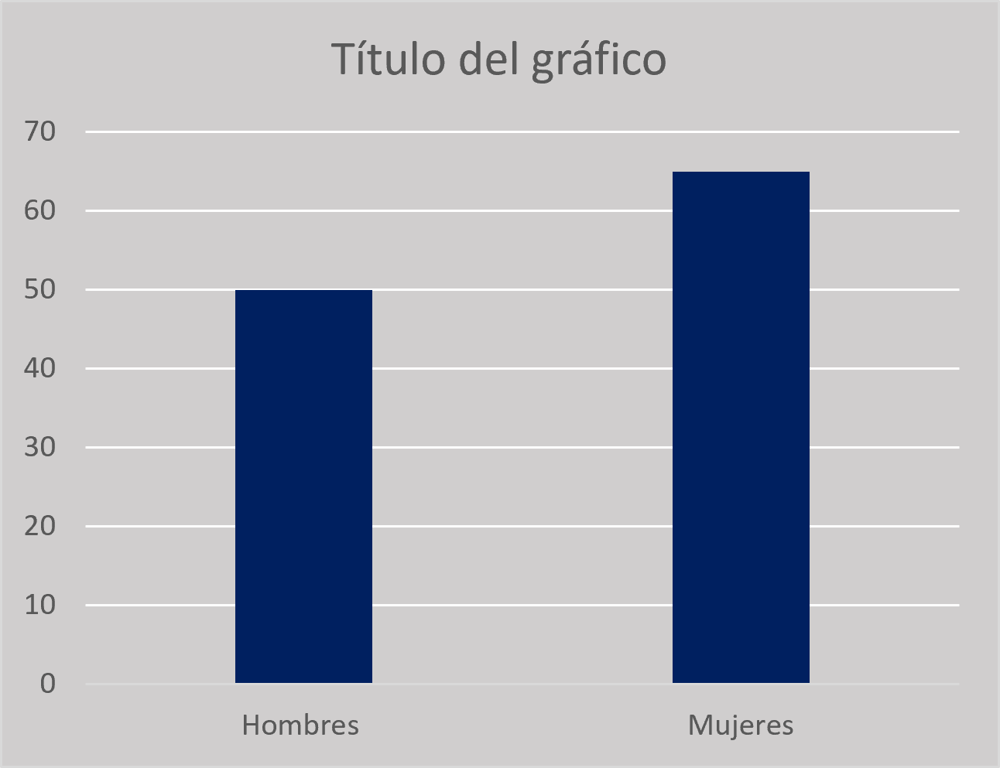
Imagen 39a. Ejemplo de mala práctica: el color de fondo no tiene un contraste suficiente con los elementos textuales del gráfico. Fuente: elaboración propia.
Ejemplo correcto
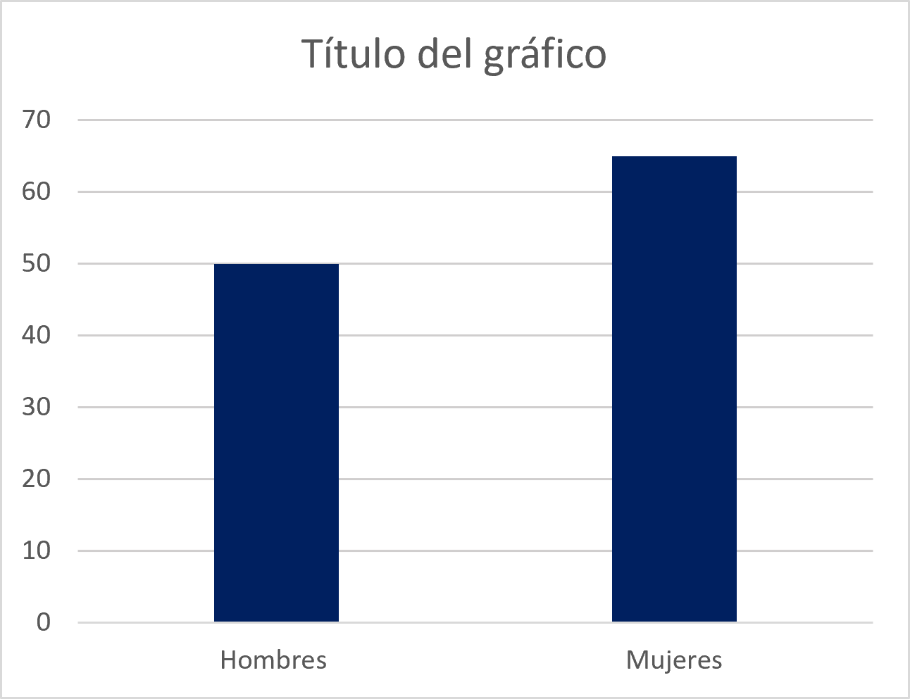
Imagen 39b.Ejemplo de buena práctica: el color de fondo tiene un contraste suficiente con los elementos textuales del gráfico. Fuente: elaboración propia.
Es muy importante evitar añadir elementos flotantes en el gráfico (por ejemplo, otras imágenes o formas predefinidas), ya que pueden confundir a los usuarios de lectores de pantalla.
Otro elemento que puede influir negativamente, especialmente en la visibilidad de los datos numéricos que acompañan a las marcas del gráfico son las líneas de cuadrícula. En este sentido, hay que valorar si realmente ayudan al lector a procesar los datos más rápidamente, así como garantizar que no compiten visualmente con los datos [1]. En el caso de que las necesitemos incorporar, deberemos asegurar un contraste suficiente entre valores y líneas.
Ejemplo incorrecto.
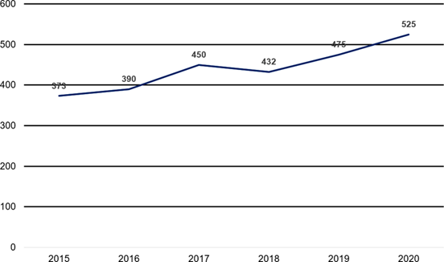
Imagen 40. Ejemplo de mala práctica: las líneas de la cuadrícula se superponen con las etiquetas de datos. Por otro lado, son tan gruesas que compiten visualmente con la línea. Fuente: elaboración propia.
Ejemplo correcto.
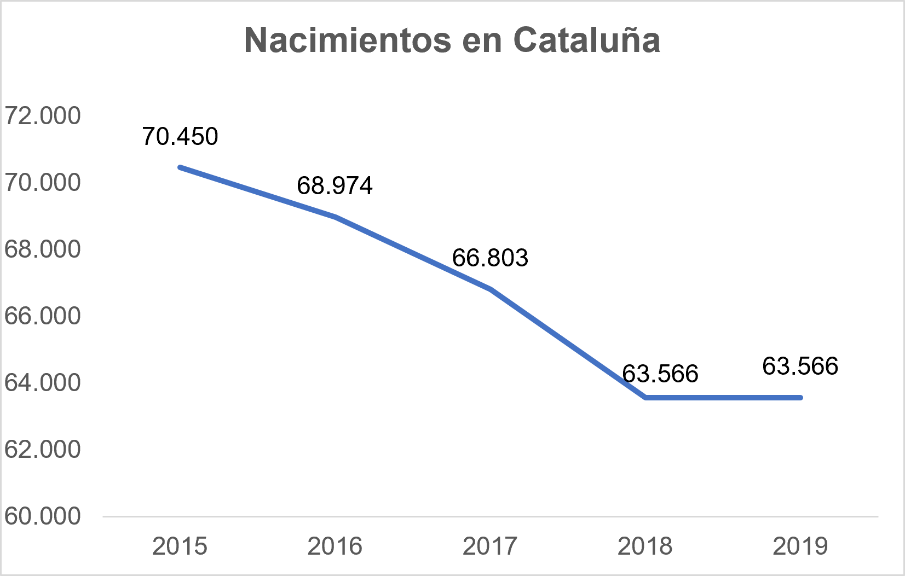
Imagen 41. Ejemplo de buena práctica: se han eliminado líneas de cuadrícula innecesarias. Fuente: elaboración propia.
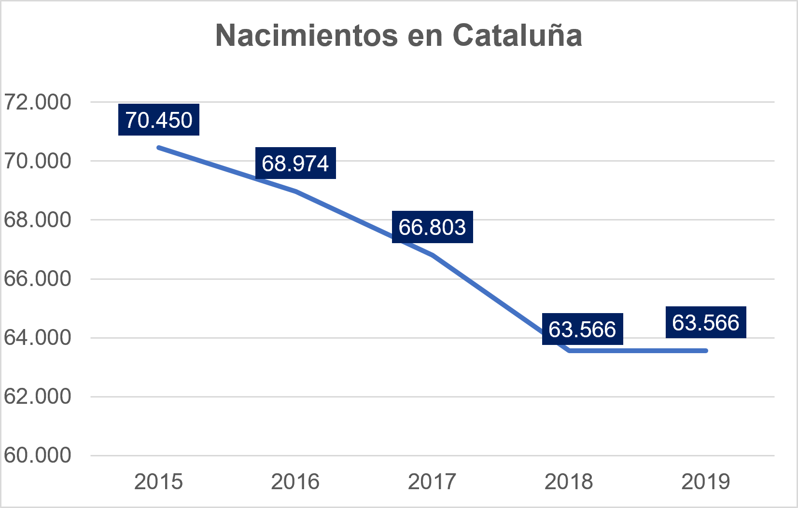
Imagen 42. Ejemplo de buena práctica: se ha reducido el grosor de las líneas de la cuadrícula y se ha añadido un fondo de color a las etiquetas de datos para garantizar su contraste con el fondo y la cuadrícula. Fuente: elaboración propia.
Aunque cada vez son menos populares, los gráficos en 3D todavía se utilizan en muchas publicaciones. El principal problema derivado de representar las marcas (barras, sectores...) de un gráfico en tres dimensiones es que el efecto de profundidad nos presenta los objetos más cercanos como si fueran más grandes, provocando una distorsión de las medidas reales de cada elemento. En otros tipos de gráficos como los de barras, resulta complicado entender el valor que representa cada barra, ya que el lector no sabe cuál de las dos líneas del extremo de la barra (la que se ve más cerca, o la más lejana) es la que marca el valor de la variable.
Ejemplo incorrecto.
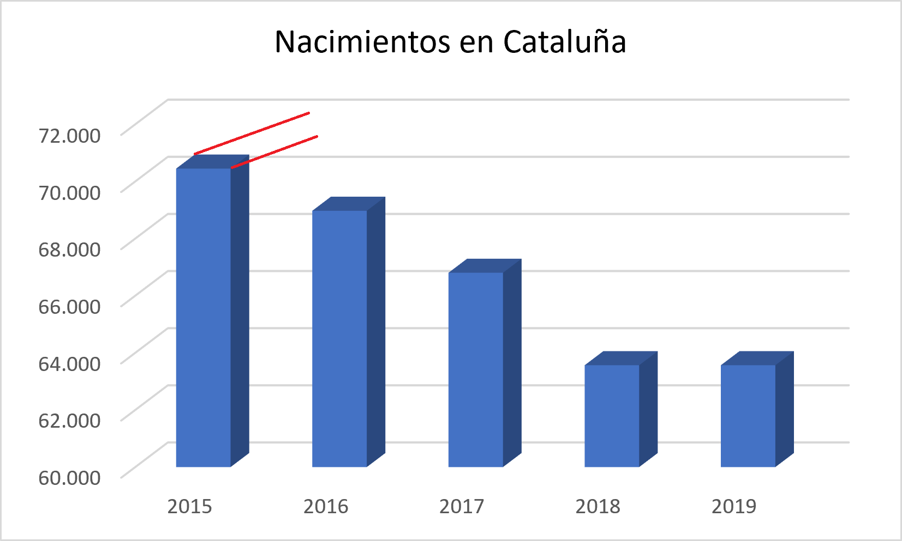
Imagen 43. En los gráficos en tres dimensiones, resulta imposible saber qué línea representa el valor de la variable. Por otro lado, también resulta más complicado aproximar el valor exacto que en un gráfico en dos dimensiones.
Las plantillas son hojas de cálculo previamente diseñadas para un uso determinado y recurrente. Por ejemplo, una plantilla para crear facturas u otra para generar informes de resultados contables. Excel incluye algunas plantillas preinstaladas, pero también podemos descargar otras de Internet o generar nuevas desde cero.
Crear plantillas en nuestro entorno de trabajo nos permite ahorrar tiempo y asegurarnos de que algunas de las características de accesibilidad que se tratan en este documento quedan integradas en todos los documentos que generamos.
Menú: Archivo – Libro en blanco
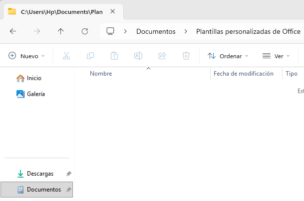
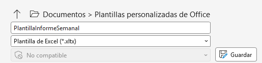
Imagen 44. Cuadro de diálogo para guardar una plantilla.
Archivo – Guardar.
Escoge la ubicación en la que quieres guardar la plantilla, indica un nombre para la plantilla y selecciona el tipo de fichero "Plantilla de Excel (*.xltx)" en el cuadro combinado. Finalmente, puedes añadir etiquetas representativas para la plantilla antes de pulsar el botón "Guarda".
En este apartado se explica cómo empezar a trabajar en un documento a partir de una plantilla generada anteriormente. En el caso de que queramos empezar a trabajar en un libro de trabajo en blanco, es necesario que vayas a Fichero y, a continuación, selecciones la opción "Libro de trabajo en blanco".
Crea un nuevo documento a partir de una plantilla.
Menú: Archivo – Nuevo – Personal.
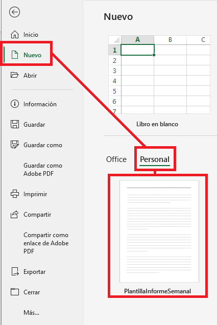
Imagen 45. Opción de menú para crear un nuevo documento Excel a partir de una plantilla personal.
Excel permite no sólo crear plantillas para las hojas de cálculo, sino que también podemos guardar los gráficos como plantillas.
Selecciona el gráfico – Clic derecho – Llama y guarda como plantilla.
Elige un nombre para la plantilla y guárdala.
Por defecto, en Windows, Excel guardará la plantilla en el directorio C:\Users\nombre-usuario\AppData\Roaming\Microsoft\Templates\Charts.
Conviene mantener las plantillas en este directorio para que Excel las encuentre cuando necesitamos cargarlas.
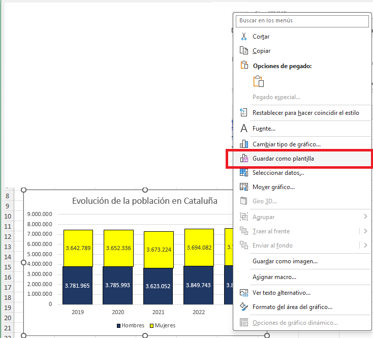
Imagen 46. Guardar como plantilla un gráfico nos permitirá aplicar posteriormente estos estilos a nuevos gráficos del mismo tipo.
Para cargar la plantilla de un gráfico debes seguir los pasos que se indican a continuación.
Selecciona la tabla que contiene los datos que quieres representar en forma de gráfico.
Menú: Insertar – 2) Gráficos recomendados – 3) Pestaña "Todos los gráficos" – 4) Opción "Plantillas" – 5) Seleccionar la plantilla.
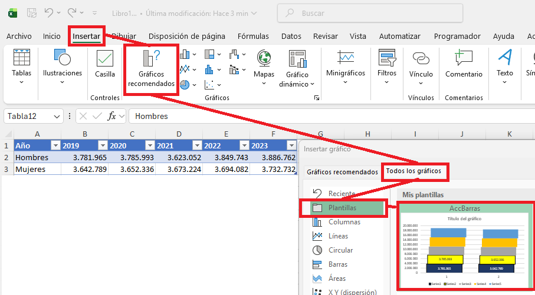
Imagen 47. Desde la opción de gráficos recomendados, puedes acceder a las plantillas guardadas.
Una vez seleccionada la plantilla, solo hay que activar el botón "De acuerdo" y el gráfico cargará la plantilla guardada. Sin embargo, habrá que adaptar ciertos elementos como el formato del título o el de las etiquetas de los ejes que no se conservan en la plantilla.
A pesar de basarte en plantillas accesibles, el nuevo contenido de cada nuevo documento deberá seguir el resto de pautas que se explican en esta guía para asegurar la accesibilidad total del documento.
Excel dispone de una herramienta de validación de la accesibilidad automática que nos ayuda a la hora de detectar posibles problemas de accesibilidad en nuestro documento. El validador de accesibilidad del Microsoft Excel clasifica los problemas de accesibilidad como:
Menú: Revisar – Comprobar la accesibilidad.
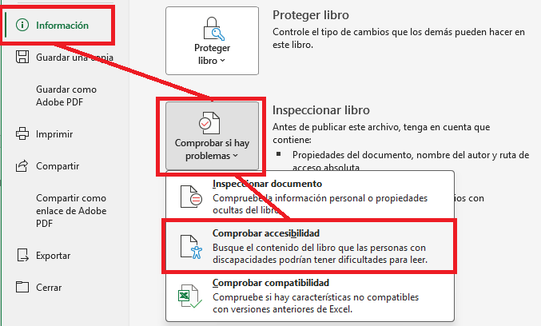
Imagen 48. Cuadro de diálogo de la comprobación de accesibilidad.
Una vez seleccionada la opción de comprobación de la accesibilidad, Excel mostrará el resultado de la validación en la parte derecha de la interfaz.
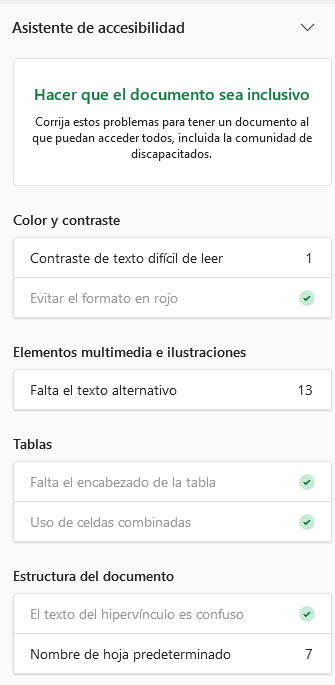
Imagen 49. Resultados del validador de accesibilidad.
Si marcaste la casilla de verificación "Mantiene el verificador de accesibilidad en ejecución mientras trabajo", puedes ver los errores y advertencias que el validador detecta en tiempo real.
En muchas ocasiones, el documento final desde el que se distribuirá el gráfico no es la misma hoja de cálculo, sino que simplemente usamos Excel para generar esta visualización y exportarla en formato de imagen para emplearla en un sitio web o documento de texto. En este apartado, se explica cómo exportar un gráfico a un fichero Word y como imagen vectorial, manteniendo las máximas características de accesibilidad.
Las últimas versiones del Microsoft Excel y del Microsoft Word ofrecen múltiples opciones de integración de datos, entre ellas la posibilidad de insertar un gráfico vectorial generado con Excel dentro de un documento Word.
Selecciona el gráfico que quieres exportar y pulsa la combinación de teclas Ctrl + C. Alternativamente, puedes seleccionar la opción de menú Inicio – Copia.
Pega el gráfico copiado en el documento Word mediante la combinación de teclas Ctrl + V. Alternativamente, puedes utilizar la opción de menú Inicio – Pegar.
Al pegar el gráfico, disponemos de las siguientes opciones:
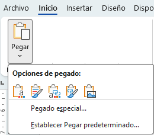
Imagen 50. De izquierda a derecha, opciones: Utiliza el formato de origen e incrusta el libro de trabajo, Conserva el formato de origen e incrusta el libro de trabajo, Utiliza el tema de destino y enlaza los datos, conserva el formato de origen y enlaza los datos.
Es importante tener presente que en el caso de mantener el gráfico vinculado al fichero Excel, cualquier modificación en la hoja de cálculo se verá reflejada en el fichero Word.
El formato vectorial es idóneo para la accesibilidad, porque si el usuario amplía el gráfico, éste sigue manteniendo la calidad (no se pixela). Si tenemos que incluir el gráfico en una página web, este será el formato más adecuado.
A pesar de generarlos nativamente en formato vectorial, Microsoft Excel no dispone de ninguna opción específica para exportar los gráficos en este formato.
Un truco para resolver esta carencia consiste en convertir el documento a formato PDF para, posteriormente, tratarlo con un programa de edición de imágenes vectoriales (Adobe Illustrator, Inkscape...).
Seleccionar el gráfico y guardar el documento.
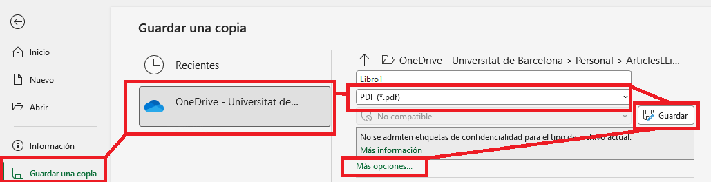
Imagen 51. Guardar el documento PDF.
Una vez tengamos el gráfico en PDF podemos convertirlo a SVG con las herramientas mencionadas.
Los gráficos estadísticos forman parte fundamental del currículo de muchas asignaturas en diferentes niveles formativos. Asegurar su accesibilidad es fundamental para garantizar el derecho de los estudiantes con diversidad funcional a acceder en igualdad de condiciones a la educación. Más aún en un contexto en el que la alfabetización en datos, entendida como el conjunto de habilidades para leer, interpretar, crear y comunicar datos, es muy relevante en una sociedad protagonizada por una ingente cantidad de datos generados por todo tipo de organizaciones, gobiernos y personas.
1. Knaflic, Cole Nussbaumer (2015). Storytelling with data: a data visualization guide for business professionals. Hoboken, New Jersey: John Wiley & Sons.
2. Moreno, Lourdes; Martínez, Paloma; González, Yolanda (2014). Guía para elaborar documentación digital accesible: recomendaciones para Word, PowerPoint y Excel de Microsoft Office 2010. Madrid: CENTAC.
3. Evergreen, Stephanie; Metzner, Chris (2013). "Design principles for data visualization in evaluation". En: Azzam T, Evergreen S (eds.) Data visualization, part 2. New directions for evaluation. No. 140, p. 5-20.
La recopilación bibliográfica que continúa no se centra específicamente en la accesibilidad de los gráficos estadísticos, ni en el Microsoft Excel como herramienta de referencia para su creación. Sin embargo, se trata de manuales que recogen buenas prácticas en la creación de gráficos estadísticos que benefician a toda la audiencia con independencia de su diversidad funcional.